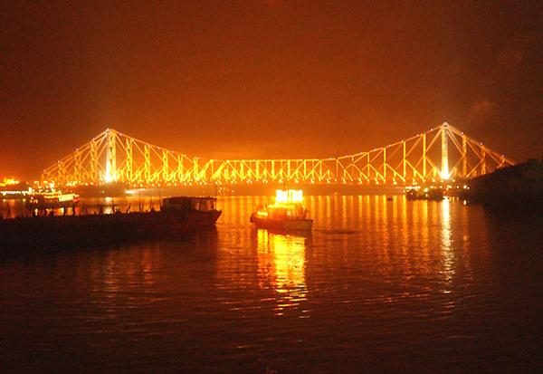

|
|
Places of interest in Kolkata

Kolkata, India, has been nicknamed the City of Palaces and also the City of Joy. City of Palaces comes from the numerous palatial mansions built all over the city and City of Joy comes from the lively and friendly and loving behavior of all the citizens all over the places making the city more lively and enjoyable.
During the British colonial era from 1700 to 1912, when Kolkata (then known as Calcutta) was the capital of British India, Kolkata witnessed a spate of frenzied construction activity of buildings largely influenced by the conscious intermingling of Neo-Gothic, Baroque, Neo-Classical, Oriental and Islamic schools of design. Unlike many north Indian cities, whose construction stresses minimalism, the layout of much of the architectural variety in Kolkata owes its origins to European styles and tastes imported by the British and, to a much lesser extent, the Portuguese and French.
The buildings were designed and inspired by the tastes of the English gentleman around and the aspiring Bengali Babu (literally, a nouveau riche Bengali who aspired to cultivation of English etiquette, manners and custom, as such practices were favourable to monetary gains from the British).
Today, many of these structures are in various stages of decay. Some of the major buildings of this period are well maintained and several buildings have been declared as heritage structures. Conservation efforts are patchy and are often affected by problems of litigation, tenant troubles, ownership disputes, old tenancy laws and a lack of funds.
go to top
Home
Developed by SUGATO CHAKRABORTY (currently pursuing B.Tech in CSE from West Bengal University of Technology, developer at Boscom Software,2014)
|
|